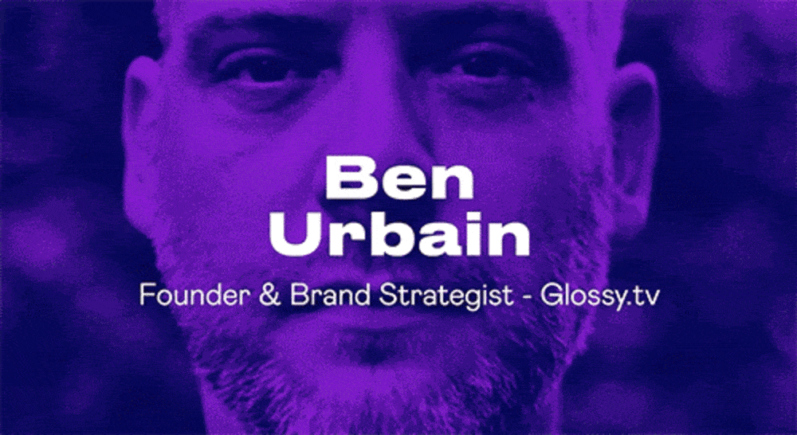
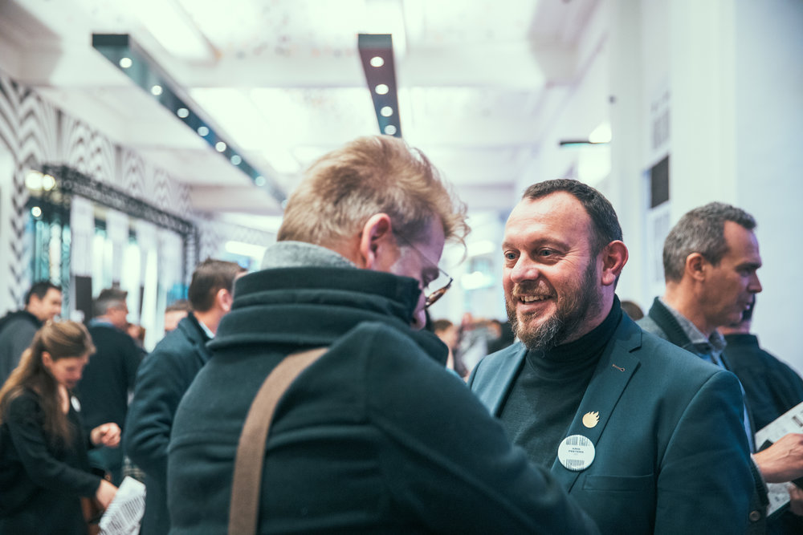
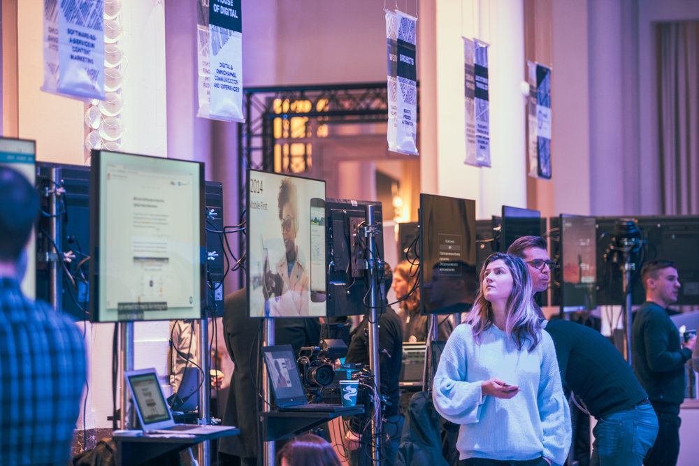

oktober 2019
Wij verzorgden de visuele identiteit voor het Media Fast Forward Event 2019
VRT brengt de mediasector samen voor inspirerende discussies en de lancering van innovatieve projecten
Glossy Branding Agency ontwikkelde de visuele identiteit voor het Media Fast Forward 2019 event. Dit jaarlijkse event, georganiseerd door VRT, brengt professionals uit de mediasector samen om na te denken over de toekomst van media. Het biedt een platform voor discussies over nieuwe businessmodellen, digitale formats, artificiële intelligentie en mediageletterdheid, en deelt inzichten en inspiratie rond media-innovatie.
Het Media Fast Forward event pakte uit met inspirerende sprekers en talkshows over de toekomst van media. Er was ook een markt met meer dan 30 technologieprojecten en start-ups. Onze oprichter Ben Urbain deelde er zijn inzichten over de onlosmakelijke band tussen branding, design en user experience (UX). Hij benadrukte dat elk nieuw en boeiend communicatiekanaal gebouwd en ontworpen moet worden met de kernwaarden van het merk in het achterhoofd.

"Alles wat we in de moderne wereld gebruiken, is met een doel gemaakt en 'ontworpen', en komt voort uit het hoofd van iemand anders. De digitale wereld heeft marketeers, designers, adverteerders, ... een ongelooflijk gamma aan nieuwe communicatiekanalen gegeven. Elk van die (nieuwe en boeiende) kanalen moet gebouwd en ontworpen worden met de goed gedefinieerde kernwaarden van het merk in het achterhoofd." aldus Ben Urbain
Het Media Fast Forward event bood professionals uit de Vlaamse en Europese media de kans om changemakers te ontmoeten en in gesprek te gaan over de uitdagingen en opportuniteiten in de sector. Het zorgde voor een levendige uitwisseling van ideeën en inzichten tussen deelnemers uit verschillende disciplines.
© Fotografie door Studio Nunu

